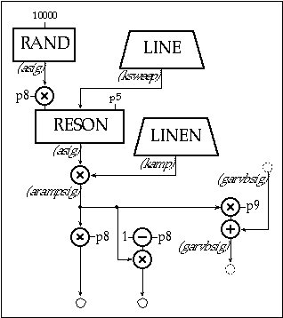

The following instrument uses the Csound rand unit to produce noise, and a reson unit to filter it. The bandwidth of reson will be set at i-time, but its center frequency will be swept via a line unit through a wide range of frequencies during each note. We add reverb as in Toot 9.
garvbsig
init
0
instr 10
; toot10.orc
iattack
=
.01
irelease
=
.2
iwhite
=
22050
idur
=
p3
iamp
=
p4
isweepstar
=
p5
isweepend
=
p6
ibandwidth
=
p7
ibalance
=
p8
; pan: 1 = left, .5 = center, 0 = right
irvbgain
=
p9
kamp
linen
iamp, iattack, idur, irelease
ksweep
line
isweepstart, idur, isweepend
asig
rand
iwhite
afilt
reson
asig, ksweep, ibandwidth
arampsig
=
kamp * afilt
outs
arampsig * ibalance, arampsig * (1 - ibalance)
garvbsig
=
garvbsig + arampsig * irvbgain
endin
instr 100
irvbtime
=
p4
asig
reverb
garvbsig, irvbtime
outs
asig, asig
garvbsig
=
0
endin
;toot10.sco
; ins
strt
dur
rvbtime
i100
0
15
1.1
i100
15
10
5
;ins
strt
dur
amp
stswp
ndswp
bndwth
balance(0-1)
rvbsend
i10
0
2
.05
5000
500
20
.5
.1
i10
3
1
.05
1500
5000
30
.5
.1
i10
5
2
.05
850
1100
40
.5
.1
i10
8
2
.05
1100
8000
50
.5
.1
i10
8
.5
.05
5000
1000
30
.5
.2
i10
9
.5
.05
1000
8000
40
.5
.1
i10
11
.5
.05
500
2100
50
.4
.2
i10
12
.5
.05
2100
1220
75
.6
.1
i10
13
.5
.05
1700
3500
100
.5
.2
i10
15
5
.01
8000
800
60
.5
.15
e

Toot 10: Filtered Noise